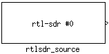
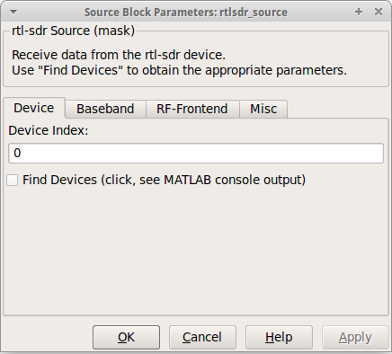
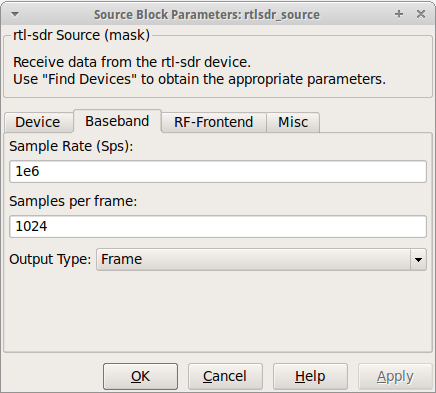
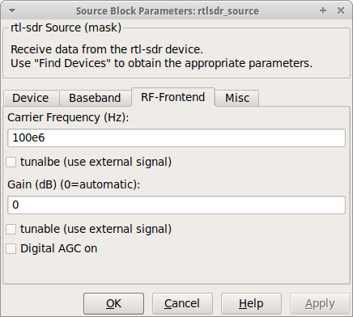
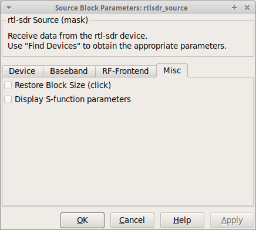

| Simulink-RTL-SDR |

| Select Tab Pane... |
|---|

Specify the index of the attached rtl-sdr device (e.g. 0). Available devices can be found using the "Find Devices" button.
The Find Devices checkbox acts like a push-button and displays information and parameters about discoverd rtl-sdr devices in the MATLAB console. (Just to make sure, the checkbox can't be selected.)

Set the rate in Samples per second (Sps) of the received samples from the rtl-sdr device (e.g. 1e6). The rtlsdr Source block will report an error, if the Sample Rate isn't possible.
Specify the number of samples per frame of the block output (e.g. 1024).
Choose between a frame-based or a vector-based output. See the MATLAB documentation for more information.

Specify the carrier frequency of the received signal (e.g. 100e6). Set the tunable checkbox to tune during runtime using an additional input port.
Specify any gain or attenuation within the gain range of the rtl-sdr device (e.g. 10). Use 0 to set the automatic gain control. Set the tunable checkbox to change the gain during runtime using an additional gain input port.
Enable or disable the internal digital AGC of the RTL2832.

Restore the geometric size of the rtlsdr Source block. The checkbox acts like a push-button and hence can't be set.
Just for debug purposes: Display the S-function parameters in the MATLAB console.
© 2012 Communications Engineering Lab • Homepage